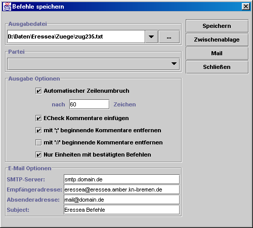

Befehle speichern

Zum Speichern/Verschicken der Befehle stehen folgende Optionen zur Verfügung:
- Speichern:
speichert die Befehlsdatei am angegebenen Ort.
- Zwischenablage:
kopiert die Befehlsdatei in die Zwischenablage. Von dort kann sie z.B. sehr einfach in ein Mailprogramm übernommen werden.
- Mail:
verschickt die Befehle direkt per Mail. Dabei werden die Einstellungen im unteren Teil des Dialoges verwendet:
- SMTP-Server: Hier trägt man den Mailserver seines Internetproviders ein. Im Zweifel dort nachfragen.
- Empfängeradresse: Hier wird die Mail-Adresse des Eressea-Servers angegeben. (default: "eressea@eressea.amber.kn-bremen.de").
- Absenderadresse: Hier trägt man die eigene Mailadresse ein.
- Subject: Der Betreff der Mail (default: "Eressea Befehle").
- Schließen:
schließt den Dialog.
Ausgabeoptionen
- Automatischer Zeilenumbruch
bricht die Befehlsdatei nach n Zeichen um. Längere Zeilen (Beschreibungen, Botschaften, etc.) werden dabei automatisch mit " \" getrennt.
- ECHECK-Kommentare
fügt ECHECK-Kommentare (wie Angaben über Silber und Personen) in die Befehlsdatei ein.
- mit ';' beginnende Kommentare entfernen:
entfernt nichtpersistente Kommentare aus der Befehlsdatei. Nach Möglichkeit sollte diese Option zum verschicken der Mail angewählt sein um die Befehlsdatei so klein wie möglich zu machen. Allerdings gehen hierbei auch die Informationen über die Bestätigung der Befehle der Einheiten verloren, da diese in ';'-Kommentaren abgelegt werden.
- mit '//' beginnende Kommentare entfernen:
entfernt persistente Kommentare aus der Befehlsdatei. Vorlage-Benutzer sollten diese Option tunlichst nicht benutzen, da so auch alle Metabefehle gelöscht werden.
- nur Einheiten mit bestätigten Befehlen:
Nur Befehle bestätigter Einheiten werden geschrieben. Unbestätigte Einheiten werden ignoriert. Diese Option ist sehr praktisch für Spieler, die sich eine Partei teilen.
$Id: menu_file_saveorders.html 8 2003-10-12 21:05:43Z eressea $